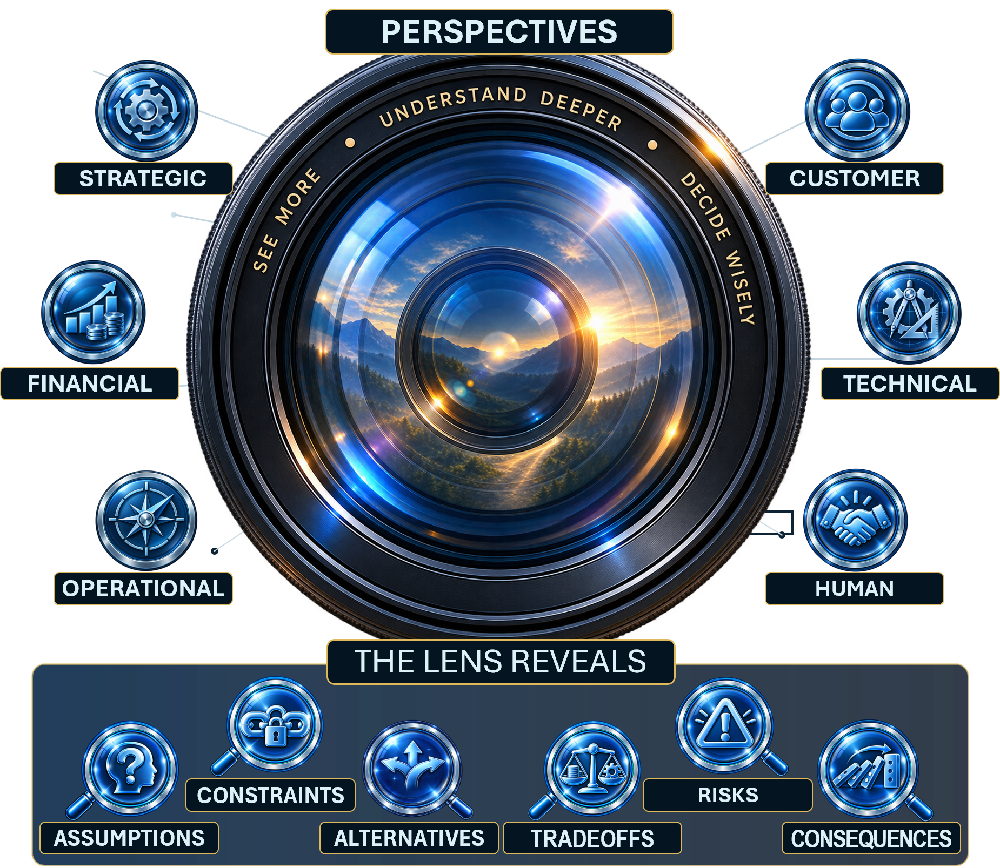
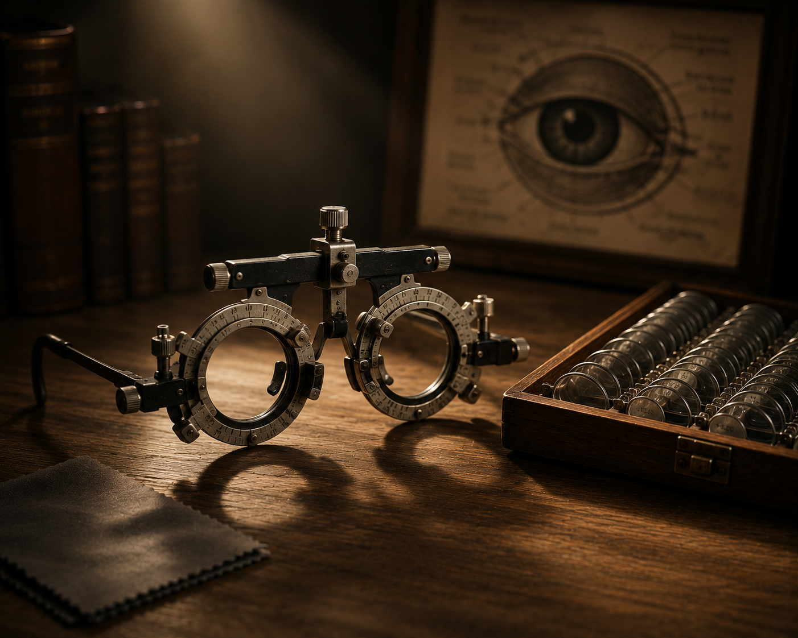

.png)
History Knows the Outcome. Decision-Makers Do Not.
We naturally evaluate decisions backward. Success makes the winning path look obvious; failure makes mistakes look avoidable. But the people making consequential decisions do not have access to the ending. They work with incomplete information, competing priorities, changing conditions, and alternatives that all contain uncertainty.
The Decision Lens asks the reader to read business history forward rather than backward: take a seat at the conference table, examine what was knowable at the time, surface the assumptions, and decide before history answers for you.
The objective is not to memorize what successful organizations happened to do. It is to practice disciplined judgment—separating decisions from outcomes and learning to ask better questions when certainty is unavailable.
See the decision from more than one angle.
Better judgment begins by changing what you look at—and then examining what the decision reveals.

Different perspectives expose different parts of the same decision.
Looking more carefully makes hidden parts of the decision easier to see.
 ConsequencesFollow the decision forward to its likely direct, indirect, and longer-term effects.
ConsequencesFollow the decision forward to its likely direct, indirect, and longer-term effects.Practice the decision before history supplies the answer.
The case studies place the reader inside consequential decisions while the outcome is still uncertain.
Enter the Decision
Start with the situation, pressures, objectives, and information available at the time.
Challenge the Frame
Ask what assumptions, constraints, incentives, identities, and conventions are shaping the discussion.
Choose a Lens
Look strategically, financially, operationally, through the customer and technical realities, and through the human consequences of the choice.
Decide Before the Outcome
Make the recommendation first. Only then use the historical outcome as evidence for learning—not as proof that the original judgment was good or bad.

What the Book Explores
A selective map of the ideas—not a substitute for the journey through the book.
Strategic Judgment
Recognize opportunity, inertia, customer value, complexity, and the moment when yesterday’s success begins constraining tomorrow.
Seeing Clearly
Distinguish reality from the information we prefer, and develop the willingness to revise a view when evidence changes.
Building Better Decisions
Examine priorities, metrics, identity, organizational models, and the conditions that shape judgment.
Leading Through Uncertainty
Explore long-term investment, ownership, candor, simplicity, customer effort, first principles, and where decisions should reside.
Choosing the Right Lens
Ask better questions before committing to an answer, especially when several interpretations of the same evidence are plausible.
Enduring Decisions
Examine decisions whose consequences travel across years, organizations, reputations, and future choices.
Put the ideas to work.
These are the kinds of questions the book is designed to make easier to ask—and harder to ignore.
- What did the decision-maker actually know at the time?
- Which assumptions are carrying the most weight?
- Are we confusing a good outcome with good judgment?
- What would have to be true for the opposite choice to be better?
- Which perspective are we underweighting?
- What could we learn from this decision even if the outcome disappoints us?
The Decision Lens
Leaders, managers, entrepreneurs, analysts, and decision-makers who operate where information is incomplete and tradeoffs are real. The book is particularly useful for teams that want richer strategic discussions rather than retrospective explanations of why an outcome now appears obvious.
Ideas Tested Against Real Decisions
A small sample of the organizations, events, and decisions examined throughout the book.
Go deeper with The Decision Lens.
Use the practical toolkit, read the opening of the book, and explore the real-world cases examined throughout it.